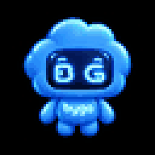

Anda sedang offline
Halaman ini belum tersimpan di perangkat. Sambungkan kembali ke internet, lalu coba lagi. Render video selalu membutuhkan koneksi.

Halaman ini belum tersimpan di perangkat. Sambungkan kembali ke internet, lalu coba lagi. Render video selalu membutuhkan koneksi.